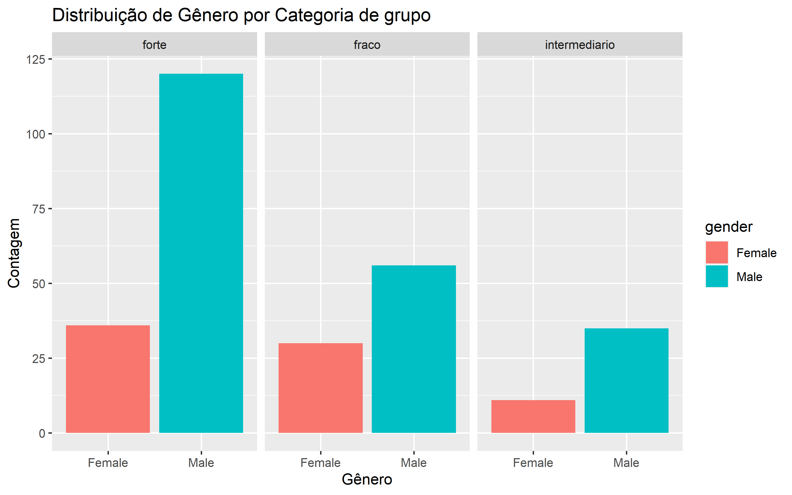
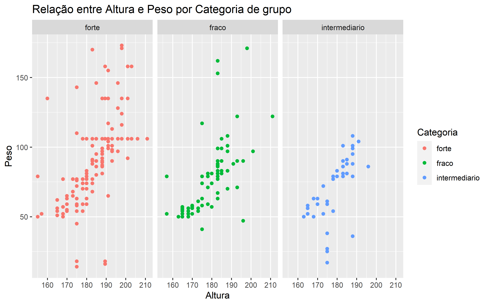

knitr::opts_chunk$set(cache = TRUE, cache.lazy = FALSE, warning = FALSE,
message = FALSE, echo = TRUE, dpi = 180,
fig.width = 8, fig.height = 5)
pacman::p_load(knitr,tidyverse, car)Bônus
Bônus
Para a tarefa bônus, infelizmente acabei destinando pouco tempo. Portanto vou descrever qual a minha idéia e a apresentar códigos apenas para parte dos recursos que seriam investigados.
A primeira ideia que me ocorre é explorar mais profundamente o banco de dados a partir da perspectiva dos clusters que criei na etapa anterior.
Vou iniciar examinando a distribuição das variáveis em cada um dos clusters. Gráficos como gráficos de de barra e dispersão podem me dar insights sobre como as características se comportam em relação aos grupos. Isso me ajudaria a identificar padrões ou discrepâncias que podem ser relevantes para a diferenciação entre os grupos.
Adicionalmente, vou realizar testes estatísticos, como análises de variância (ANOVA) ou Qui-Quadrado, para determinar se existem diferenças estatisticamente significativas entre as médias das variáveis em cada cluster. Isso será especialmente útil para identificar as características que realmente distinguem os grupos uns dos outros.
Com base nessas análises exploratórias, vou então começar a desenvolver um modelo preditivo que utilize as características para prever a classe dos grupos.
dados_clust <- readr::read_csv("dados_clust.csv") %>%
dplyr::select(-1) %>%
mutate(
across(where(is.character), as.factor)
)Vamos analisar a contagem dos grupos que foram criados. Essa análise nos ajudará a entender melhor como os indivíduos estão distribuídos em cada um dos grupos formados.
dados_clust %>%
count(grupo)# A tibble: 3 × 2
grupo n
<fct> <int>
1 forte 257
2 fraco 317
3 intermediario 69O desbalanceamento entre as contagens dos grupos pode ter implicações na análise e modelagem. Grupos desbalanceados podem afetar a capacidade do modelo de generalizar bem para todas as classes. (Como no caso da tarefa anterior de classificação.)
EDA
Vou criar um gráfico de barras para a distribuição de gênero por categoria de grupo.
dados_clust %>%
tidyr::drop_na() %>%
group_by(grupo, gender) %>%
summarise(count = n()) %>%
ggplot(aes(x = gender, y = count, fill = gender)) +
geom_bar(stat = "identity") +
labs(title = "Distribuição de Gênero por Categoria de grupo", x = "Gênero", y = "Contagem") +
facet_wrap(~ grupo, ncol = 3)
Agora um exemplo defráfico de disperção.
# Gráfico de dispersão altura vs. peso por categoria de grupo
dados_clust %>%
tidyr::drop_na() %>%
ggplot(aes(x = height, y = weight, color = grupo)) +
geom_point() +
labs(title = "Relação entre Altura e Peso por Categoria de grupo", x = "Altura", y = "Peso", color = "Categoria") +
facet_wrap(~ grupo, ncol = 3) 
Testes estatísticos
ANOVA
Verificando se existe diferença significativa entre uma variável contínua e categórica.
#
summary(aov(weight ~ grupo, data = dados_clust)) Df Sum Sq Mean Sq F value Pr(>F)
grupo 2 31031 15516 20.45 3.13e-09 ***
Residuals 454 344431 759
---
Signif. codes: 0 '***' 0.001 '**' 0.01 '*' 0.05 '.' 0.1 ' ' 1
186 observations deleted due to missingnessIsso significa que há evidência estatística para rejeitar a hipótese nula de igualdade das variâncias entre os grupos. Ou seja, os grupos têm variâncias diferentes de maneira significativa.
Verificando o pressuposto de homogeneidade das variâncias para o teste ANOVA por meio do teste de Levene.
# Teste de homogeneidade das variâncias (Teste de Levene)
leveneTest(weight ~ grupo, data = dados_clust)Levene's Test for Homogeneity of Variance (center = median)
Df F value Pr(>F)
group 2 6.0174 0.002635 **
454
---
Signif. codes: 0 '***' 0.001 '**' 0.01 '*' 0.05 '.' 0.1 ' ' 1Em resumo, os resultados sugerem que as variâncias entre os grupos não são iguais, o que pode impactar a interpretação dos resultados do teste ANOVA. Esse efeito pode estar sendo gerado devido a diferênça de tamanho dos grupos.
Chi-quadrado
Agora vou utilizar o teste Chi-quadrado para verificar a relaçãoentre duas variáveis categóricas. No caso o genero e grupo.
chisq.test(table(dados_clust$gender, dados_clust$grupo))
Pearson's Chi-squared test
data: table(dados_clust$gender, dados_clust$grupo)
X-squared = 7.7867, df = 2, p-value = 0.02038há evidência estatística para rejeitar a hipótese nula de que não há associação entre as variáveis “gender” e “grupo”. Em outras palavras, há uma associação significativa entre o gênero e os grupos.
considerações finais
Após a conclusão dessas análises, o próximo passo natural seria a elaboração de um modelo de classificação, retornando à problemática proposta nas questões 3 e 4. No entanto, esse processo também nos traria de volta aos desafios que enfrentamos anteriormente ao lidar com os dados.
No entanto, existe outra abordagem que pode ser considerada em conjunto com a anterior, dependendo dos resultados obtidos. Essa abordagem não exclui a primeira, mas acrescenta uma camada de análise adicional. Essa abordagem envolve a criação de modelos segmentados, os quais são empregados quando existem evidências que sugerem que diferentes grupos nos dados possuem relações distintas com as variáveis independentes e dependentes.
Essa estratégia é particularmente útil quando há fatores, como o gênero, que parecem estar associados aos grupos. Sob essa perspectiva, pode haver padrões específicos intrínsecos a cada grupo, que podem ser melhor capturados por modelos individualizados.
Por exemplo, se a variável gênero demonstra uma forte associação com os grupos identificados anteriormente, a criação de modelos segmentados pode ser benéfica. Esses modelos levariam em consideração as características exclusivas de cada grupo, permitindo uma compreensão mais aprofundada das relações.
Análise
Quais aspectos desse conjunto de dados apresentam problemas para agrupamento, classificação e regressão? Como você resolveu esses problemas?
De modo geral, os dados apresentam diversos problemas que podem afetar diferentes tipos de modelos.
Os principais pontos de preocupação incluem:
Dimensionalidade Elevada: Os dados possuem um grande número de variáveis, o que pode dificultar a análise e a modelagem.
Outliers: Foram identificados valores discrepantes nos dados, que podem distorcer as previsões dos modelos.
Classes Desbalanceadas: Existe um desequilíbrio significativo entre as proporções das classes, o que pode afetar a capacidade dos modelos de capturar padrões das classes minoritárias.
Variáveis Esparsas: Algumas variáveis possuem valores predominantemente nulos ou ausentes, o que pode prejudicar a capacidade do modelo de aprender com essas características.
Colinearidade entre Variáveis: Foi observada uma correlação alta entre algumas variáveis independentes, o que pode dificultar a identificação das relações individuais entre as variáveis e o resultado.
Distribuição Não Normal: As distribuições de algumas variáveis não seguem uma distribuição normal, o que pode impactar a adequação dos modelos.
Valores Ausentes: Existem valores ausentes nos dados, o que pode influenciar negativamente as previsões dos modelos.
Especificamente em relação aos modelos de agrupamento:
- Os principais desafios envolvem o tratamento de outliers, a alta dimensionalidade dos dados e o desbalanceamento das classes.
Para a tarefa de classificação:
- Dados incompletos, classes desbalanceadas, outliers, alta dimensionalidade e colinearidade entre variáveis são as principais preocupações.
E para modelos de regressão:
- A multicolinearidade entre variáveis, distribuição não normal, outliers e valores ausentes são fatores críticos a serem considerados.
Quanto às medidas tomadas para enfrentar ou mitigar esses problemas, elas estão detalhadas nos documentos adicionais. Alguns aspectos que poderiam ser aprimorados incluem: uma estratégia mais refinada para a detecção e tratamento dos outliers, a execução de testes estatísticos para avaliar a independência entre variáveis e identificar diferenças significativas.